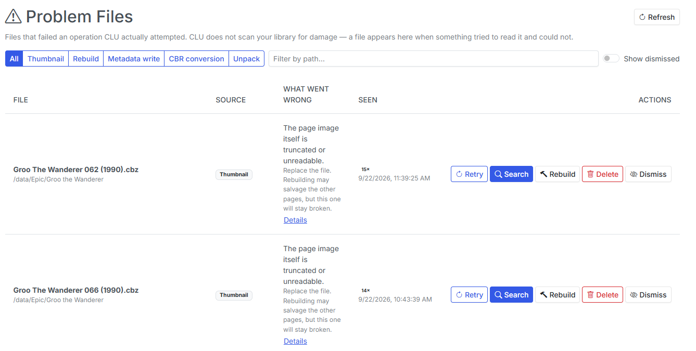
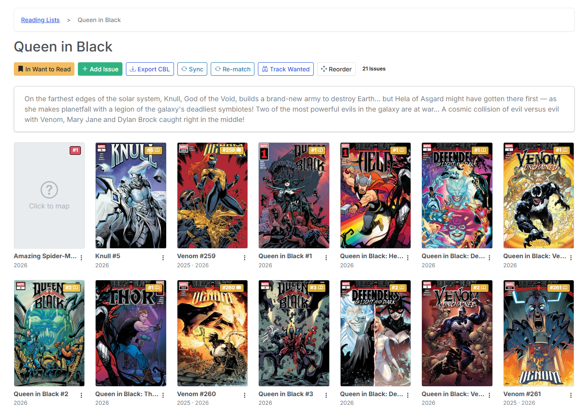
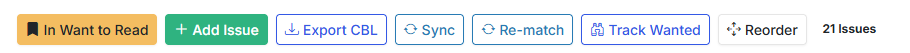
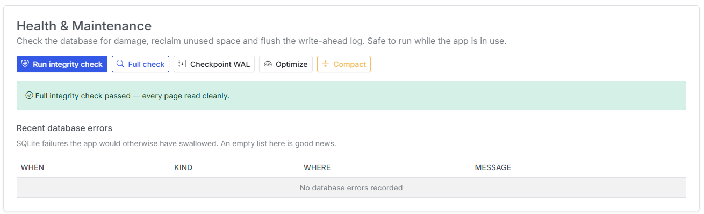
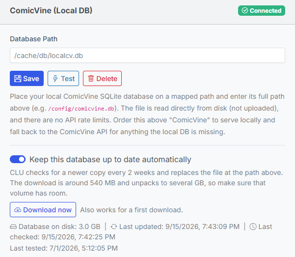
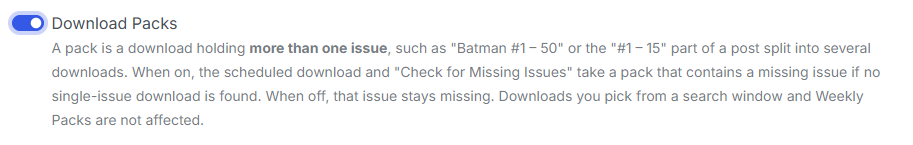

v6.5 - Problem Files, Self-Maintaining Reading Lists, & Database Recovery
Most of v6.5 is infrastructure you're not supposed to think about. But three things in it are worth your attention, and they share a theme: CLU now tells you when something is wrong, instead of failing quietly and hoping you don't notice.
Damaged comics get a page of their own. Reading lists maintain themselves. And the database can repair itself.
Behind those, a long run of download-correctness fixes — including one that had CLU downloading the wrong comic under the right name.
Problem Files
Before v6.5, a damaged comic produced a generic broken tile in your grid and a line in the app log. That was it. There was no list of what was broken, no explanation of why, and nothing you could click.

Problem Files is a new item in the gear menu — Store Owner only, gated the same way Settings and Schedules are. Every row is a file CLU actually tried to read and couldn't, tagged with what it was doing at the time:
| Source | What was being attempted |
|---|---|
| Thumbnail | Generating the cover for the grid |
| Rebuild | A single-file or directory rebuild |
| Metadata write | Writing ComicInfo.xml back into the archive |
| CBR conversion | A CBR/RAR that wouldn't convert to CBZ |
| Unpack | An archive in your WATCH folder that wouldn't open |
The important thing to understand is what an empty page means. CLU does not scan your library looking for damage. A file appears here because something tried to read it and failed. So an empty page means nothing has failed — not your library is clean.
Unpack is the row type I'd draw your attention to. Its path is a download, not a library comic. The file never reached your library at all, which is exactly why nothing else would ever have told you about it. If you've ever had a download simply vanish, that's where it went.
Each row offers Details (the archive error in full), Retry, Rebuild, Find a replacement, Dismiss, Delete and Remove. A couple of the design decisions are worth explaining:
- Rebuild is honest about its odds. Repacking an archive fixes the container, not the contents. Its one genuine repair is a RAR wearing a
.cbzname; a real CRC error aborts the extraction and no amount of rebuilding brings those pages back. So on most rows the page demotes Rebuild and promotes Find a replacement. That's a recommendation, not a limitation — Rebuild is still there. - Dismiss is keyed to the file, not the message. A dismissal lifts by itself if the file is rewritten and still fails. It deliberately doesn't match on the error text, because a damaged archive raises a different error depending on which page happens to be read first.
- An unwritable cache is not a damaged comic. When the failure is CLU's own
/cacherather than the archive, the page says so and hides Delete entirely. It's the one case where the fix is a permissions change, and deleting a perfectly good comic would be exactly wrong.
Replacing a damaged file
This is the feature inside the feature, and it's the reason Problem Files is more than a list.
CLU's normal import only files issues that are missing. A corrupt file is still a file — so downloading a clean copy the ordinary way would leave it sitting in your processed folder forever while the broken one stayed in your library.
Find a replacement opens the source search pre-filled from the filename, and claims whatever you queue for that exact path. When it lands, CLU verifies it, trashes the damaged copy, and moves the replacement into its place.
The guarantees matter more than the flow:
- The replacement is checked before anything is destroyed. It's CRC-checked end to end and must actually contain pages. A partly-readable original is worth more than a broken replacement, so a failed verification is a no-op — nothing moves.
- The damaged file goes to the trash, never straight to deletion, and a failed swap puts it back.
- A CBR won't replace a CBZ — but that's a hold, not a failure. It means the conversion pipeline hasn't reached the file yet, and the swap happens on a later pass. The reverse (a CBZ replacing a damaged CBR) is an upgrade and goes straight through.
- You don't have to sit on the page. The swap is also applied by the normal download sweep, so closing the tab strands nothing.
A failed swap stops retrying, deliberately. Retrying the same bad release nightly would produce the same bad file nightly — run Find a replacement again and pick a different one.
Reading lists maintain themselves
Five separate changes landed here and they compound into one story: an imported reading list stops being a snapshot and becomes something CLU maintains.

Sync now covers every source. It existed before, but covered GitHub CBLs only. It now covers all four import sources — a GitHub CBL URL, a Metron reading list, a Metron story arc and a ComicVine story arc. In each case CLU asks the cheap question first and only rebuilds when the answer has moved.
That produces two very different-looking outcomes, so it's worth knowing both are normal: nothing changed is answered instantly, in the request, with no progress bar at all; something changed runs the rebuild in the background, and a large ComicVine arc genuinely takes minutes.
Arcs sync differently from lists, for a reason that isn't obvious: adding an issue to a story arc modifies the issue, not the arc, so an arc's own "last modified" date never moves. CLU compares the arc's membership instead — which is why arc syncs are a little slower.

And if you've been re-importing a list to update it: stop, and use Sync. Re-importing still makes a second list. That's exactly what Sync is for.
Track Wanted is new, and it's the one to be deliberate about. Turn it on for a list and every entry with no matched file becomes a wanted issue — it shows on the Wanted page under From Reading Lists, and the nightly sweep searches for it.
It's off by default and opt-in per list, because a 300-issue arc import must not silently start 300 nightly searches. It's also restricted to users who can manage the list, unlike Bookmark: bookmarking is personal data, but Track Wanted spends bandwidth and disk.
One rule there will look like a bug if you don't know why: undated issues are searched, which is the opposite of how the rest of the Wanted page behaves. A release-calendar entry with no date is an unscheduled solicitation. A reading list is back catalogue — a missing year means already released, not skip.
And lists now keep pointing at the right file. Three fixes:
- Matches follow the file. Rename a comic, move it, or convert it from CBR to CBZ and the list entry follows. This matters most for mappings you made by hand — Re-match deliberately skips those, because your answer beats the matcher's, which used to mean a hand-picked mapping broken by a rename could never heal itself.
- Gaps fill the moment the file arrives. When a download lands, CLU checks whether it closes a gap on any tracked list and maps it immediately. No waiting for the nightly re-match. This only ever adds a match — an arriving file can never un-map something you'd already mapped.
- The right volume. A list entry no longer maps to an issue of the same number from a different volume or year.
The database can repair itself
This is the half of the release nobody wants to need, which is why it wants to exist before you need it.

Start with the Storage field. The Database tab now reports what kind of filesystem your database is actually sitting on, and this is the most important field on the page. A database on CIFS/NFS/sshfs is the single commonest cause of SQLite corruption — the file locking SQLite needs isn't reliably implemented there, it isn't a CLU bug, and nothing in CLU can fix it. Your library on a NAS is fine. /config is not.
overlay means /config was never mounted at all, and your database will be destroyed the next time the container is recreated. CLU raises an alert on both.
Salvage reads out everything still readable and builds a clean copy, and never modifies your current database. You see the result — method, integrity, rows lost, size, and a per-table before/after diff — and then decide whether to install it.
One number on that report deserves explaining. Rows lost can come back as "unknown", and that's the honest answer. The corrupt table is usually the exact table whose row count can't be read, so CLU reports it as unknown rather than quietly counting it as zero loss. A naive "0 rows lost" on a salvage would be dangerously wrong.
And if CLU won't start at all, there's an offline rescue script that runs via docker exec with nothing but Python's standard library. Everything else on the recovery page assumes a running app; that one doesn't.
Alongside the recovery half, the maintenance half: a Health & Maintenance card (integrity check, full check, checkpoint WAL, optimize, compact — all safe to run while the app is in use), and a Recent database errors list of SQLite failures the app would previously have swallowed silently. An empty table there is good news.
Three quieter database fixes worth naming:
- A backup now holds exactly one file. Backups used to include the
-wal/-shmsidecars captured at slightly different instants — a combination that reads back as a corrupt database. Older archives are still restorable; CLU just ignores the sidecars. - Backup filenames step forward a second on collision, so a manual backup and an automatic one taken in the same second no longer overwrite each other.
- Shutdown is clean.
docker stopandrestartnow flush the write-ahead log before exiting. Every restart used to be an unclean shutdown as far as SQLite was concerned — and on a container that restarts nightly, that was happening nightly. It was a contributing cause of the corruption this release is about.
Auto-Updates for the Local ComicVine DB
The comicvine_sqlite provider ("ComicVine (Local DB)") reads a SQLite dump from a path the user types into Settings. Until now that file was entirely the user's problem: find it, download it, remember to refresh it. A stale dump silently means missing issues and missing credits, and nothing in the UI said how old it was.

This lets a user opt in to having CLU keep their copy current, checking every 2 weeks, plus a Download now button that runs the same path on demand — which doubles as a first-run bootstrap for someone who has configured a path but has no file there yet.
Note
Future Enhancement: Currently, the user must still manually download the database dump from Reddit to a known location. In a future release, we plan to add the ability to download this directly from CLU.
Downloading the right thing
This is the least glamorous section and possibly the most valuable. Four fixes, all answering the same complaint: CLU downloaded the wrong comic, or the same comic twenty times.
The big one: listing pages. A DDL listing page — a weekly update, a Top-10 roundup — holds many unrelated comics. CLU used to fetch the first download link on the page whatever it was aiming for. So a run of wanted issues could all quietly download the same unrelated comic, each one filed under the name of the issue it was supposed to be.
A download of the wrong comic under the right name is worse than no download, because nothing looks broken until you open it. CLU now takes the specific entry or nothing.
Split posts had the mirror-image problem: a post split into "#1–15", "#16–30", "#31–50" always yielded the first part regardless of which issue was wanted. The correct part is now picked per issue.
A sweep can't run twice over the same scope. If a scheduled run is in progress, Run Now and the next scheduled trigger stand down rather than starting a second copy that re-queues everything the first is still working through. Check for Missing Issues is the exception — that's an explicit request about one series, and making you wait out a multi-hour sweep would be worse than the single duplicate it can cost.
A sweep queues at most 150 downloads. That's a blast-radius limit, not a throughput limit: hitting it stops that run and the rest is picked up next time. Nothing is lost.
A rate-limited host is stood down, not asked again on every queued item. MEGA in particular used to produce dozens of identical "Too many requests" failures against a handful of files. A cooling host is moved to the back of the list rather than dropped, so it's still used when it's the only link a post offers.
And the whole sweep now reports into Active Operations. A run that can last hours used to be completely invisible unless you'd started it from a series page.
Download Packs
A new switch, on Settings --> Download and API --> Search Variant Settings. A pack is a download holding more than one issue — "Batman #1–50", or the "#1–15" part of a split post.

With it on, the scheduled download and Check for Missing Issues will take a pack containing a missing issue if no single-issue download is found. With it off — the default — that issue stays missing.
It ships off because a pack can be tens of gigabytes fetched to satisfy one missing issue. It doesn't affect downloads you pick yourself: the search window marks packs, so choosing one is always your call.
Two scoring fixes came with it. Plurals now score like their singulars — "Annuals", "TPBs", "Quarterlies", "Omnibuses", "Galleries" are matched by the corresponding keyword, so you don't need to add plural forms yourself. And "+ Annuals" is an add-on, not a sub-series: "Batman #1–50 + Annuals" is still a Batman #1–50 pack.
Thumbnails actually update
If your covers went stale after editing a comic and never came back, that's fixed. Two specifics, because they're what people actually reported: rebuilding a whole directory left every cover stale while rebuilding one issue at a time worked; and on PUID/PGID installs, thumbnails written by an earlier root-fallback start could never be overwritten at all.
Every operation that rewrites a comic now refreshes its cover, and the grid additionally notices on its own when a comic is newer than its cached cover. Existing stale thumbnails repair themselves as you browse — there's no rescan to trigger.
Two related cleanups: formats that can't be thumbnailed are now skipped permanently rather than retried. PDFs (and CBR/RAR on the background scan) have no thumbnail reader and were being re-queued at every restart, which is why large libraries saw a thumbnail storm on boot. They're skipped once — and deliberately not recorded on Problem Files, because "a PDF has no thumbnail reader" is a fact about the format, not damage. macOS sidecar files (._Foo.cbz) are no longer queued as comics either.
A genuinely failed thumbnail is a different matter, and now shows up on Problem Files with the actual archive error instead of a silent broken tile.
Security
v6.5 fixes a path-confinement issue in the folder cover art endpoint (GHSA-vhvw-93fg-whm8): a signed-in user could read files outside the libraries they had been granted. The user would need to have known the filesystem path of a file outside their granted libraries, which CLU wouldn't expose through any UI. The probability of this being exploited is extremely low. It was reported via our security policy and we appreciate the submitter's responsible disclosure. The patch was released in less than 24-hrs.
If your install has users you don't fully trust, the relevant action is simply: upgrade to v6.5.
Bug Fixes
- A corrupt archive in WATCH is opened once, not forever. A damaged
.zipused to be re-extracted on every five-minute sweep, producingComic (19).cbz-style duplicates in your processed folder and thousands of log lines. It now fails once, is recorded on Problem Files under Unpack, and is left alone. - Partial downloads are left alone. An AirDC++ transfer still in progress (
.dctmp) was being imported as a finished comic every 30 seconds — one report left 28 copies of the same file. Orphan cleanup now refuses to delete anything that's still growing, and the Clean Up Orphan Files button got the same guard, so clicking it mid-download no longer kills the download. Another client's in-progress queue items are never reaped at all: a DC++ queue item can legitimately sit idle for hours waiting for a source. - A failed move leaves no copy behind. If a move out of WATCH failed, the partial destination stayed put — and a full copy left behind gets re-imported under a new name on the next sweep. CLU now cleans up after a failed move.
- No more CBR sitting beside its own CBZ. On CIFS/SMB and Windows-backed WSL2 mounts, a conversion could write a perfectly good CBZ and still be reported as failed, leaving both files in place on every download. Existing stray pairs need cleaning up by hand.
- A failed rebuild restores the comic where it found it, instead of leaving it renamed to
.bak/.zipbeside a folder of loose pages. Failures are recorded on Problem Files. - Clear Completed clears everything. It only ever cleared direct downloads, so AirDC++ and Usenet rows stayed on the page reading "Complete" — which is what made the button look broken. A download that finished but couldn't be filed clears as completed rather than failed: the download worked; what failed is CLU finding the file afterwards, commonly because the client is on another host.
- The Pull List menu is back on the Source Wall. It was missing from that page only.
- Saving settings no longer signs you out, and ComicVine works again on the current Simyan release.
- The container talks while it starts. First-run and large-library starts could sit silent for two minutes, which is indistinguishable from a container that never started. Ownership passes over
/cacheand/configare now timed and reported, and the startup database backup no longer delays startup.
Notes for Upgraders
Nothing to migrate, and nothing turns itself on.
- Problem Files starts empty, and that's correct. It's a report of failures, not a scan. Files appear as operations hit them.
- Track Wanted is off on every list. Your existing reading lists don't start searching for anything until you turn it on, per list.
- Download Packs is off. Auto-download behaviour is unchanged unless you switch it on.
- ComicVine local-DB auto-update is off. A 540 MB download that unpacks to several GB must not start unannounced on upgrade. The Download now button isn't gated, though — and it now works as a first download, so bootstrapping a local ComicVine database no longer involves any manual steps.
- Your old database backups still restore. Backups taken before v6.5 included
-wal/-shmsidecars; CLU now ignores them. - Check the Storage field on the Database tab once. It takes ten seconds, and it's the one thing in this release that can save you from losing a database rather than repairing one.
That's v6.5 — CLU that shows you the comics it couldn't read, reading lists that keep themselves current, and a database that can be rescued instead of restored from last week. Feedback is welcome via Discord or GitHub.
Previous release: v6.4 — Push Notifications, Folder Art Styles, Metron Tokens, & Credit Repair